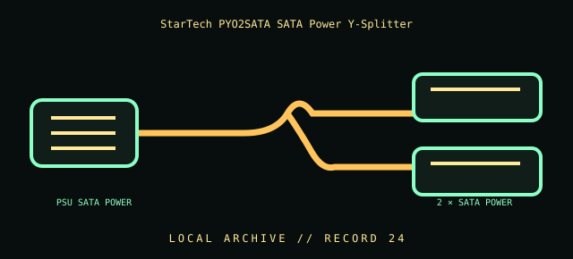

[ INDIVIDUAL COMPONENT // CABLES & ADAPTERS ]
StarTech PYO2SATA SATA Power Y-Splitter
StarTech.com PYO2SATA 6-inch SATA power splitter. This entry identifies the documented model and does not claim that visually similar products share its pinout, protocol, capability, or host compatibility.

COMPATIBILITY WARNING: Verify the exact product model, host/device role, signal protocol, electrical requirements, and manual before connection. Connector fit alone does not prove compatibility.
Specifications
| Catalog subcategory | Internal power cables |
|---|---|
| Catalog identity | StarTech.com PYO2SATA 6-inch SATA power splitter |
| Verified protocol / model information | One SATA 15-pin power plug to two SATA 15-pin power receptacles; StarTech lists a 6-inch length. This is a parallel power distribution adapter, not a data splitter or voltage converter. |
| Connector ends | PSU SATA POWER → 2 × SATA POWER; diagram is schematic, not a pinout map. |
Physical & electrical compatibility
Use only from a PSU SATA power output whose wiring and capacity are verified. This adds a branch, not electrical capacity: total current on the original PSU output, wiring, connector, and adapter remains limited by their ratings. Never attach two PSU outputs together. Stop using any adapter that runs warm unusually, smells, discolors, or has loose/melted contacts.
Archival & handling notes
Record which PSU harness and loads were connected; do not leave a splitter unidentified in a cable bin. Inspect crimp/molded joints, contacts, and insulation before use. Avoid daisy-chaining power splitters or using unknown adapters for high-current loads.
Record provenance, condition, label photographs, exact full part number/revision, host system, and any test method/result. Preserve packaging and source documents with the cable when available.
Manufacturer & standards references
- StarTech — PYO2SATA SATA power splitterManufacturer model and 6-inch SATA-power splitter identification.
- Serial ATA International Organization — SATA specificationsStandards body reference; power cabling capacity is governed by the PSU and cable, not the data interface.
Manufacturer documentation applies to the cited model; standards references describe the protocol family. Where product revisions or device support vary, the exact manufacturer manual and host documentation take precedence.